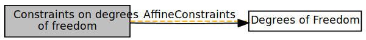
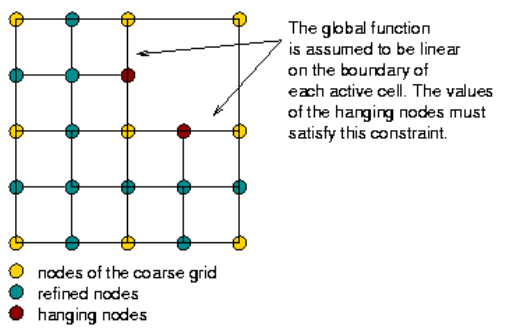

This module deals with constraints on degrees of freedom. As from the collaboration diagram, the AffineConstraints class is the central class to deal with constraints.

Dirichlet boundary conditions
For Dirichlet boundary conditions, constraints are generated by (eg. in Step-3, Step-4, and Step-5),
1 | VectorTools::interpolate_boundary_values(dof_handler, |
After the above operation, boundary_values,which is a std::map describing the nodal index and the boundary values, has been derived.
Then what we should do is to modify the system_matrix, solution vector, and system_rhs vector based on the derived boundary_values to set the boundary nodes to their correct value. The operation code is as follows (eg. in Step-3, Step-4, and Step-5),
1 | MatrixTools::apply_boundary_values(boundary_values, |
Note: Dirichlet boundary conditions can also be implemented by other ways, using AffineConstraints (seeing in Step-6). This “AffineConstraints” method will be discussed shortly.
Hanging node constraints
When one wants to do Adaptive Mesh Refinement (AMR), hanging nodes will appear, as shown in the following figure. They induce some problems. A hanging node is not shared by two adjacent elements, causing the discontinued shape functions between the two elements. Therefore, this will cause discontinue displacement at the hanging node.

So we need to manually make the displacement continue at hanging nodes by adding hanging node constraints.
The deal.II class that implements these constraints is AffineConstraints. The code of this class has been shown as follows (from Step-6),
1 | AffineConstraints<double> constraints; |
Next we need to compute such hanging node constraints by using “DoFTools::make_hanging_node_constraints” function. Also the Dirichelet boundary conditions can also be added to this class by using “VectorTools::interpolation_boundary_values()” function. The implementation is as follows,
1 | constraints.clear(); |
Similarly to the process in the above section of Dirichlet boundary conditions, we need to modify the system_matrix, solution vector, and syst
em_rhs vector based on the derived boundary_values to set the boundary nodes to
their correct value.
However, with the “AffineConstraints” class, we can achieve this easier. One can use the “AffineConstraints::distribute_local_to_global()” functions to directly distribute entries in vectors and matrices when copying local contributions into a global matrix or vector. (The explanation of this function from the official website: this function also takes care of constraints, i.e. if one of the elements of local_dof_indices belongs to a constrained node, then rather than writing the corresponding element of local_vector into global_vector, the element is distributed to the entries in the global vector to which this particular degree of freedom is constrained. Thus, by using this function to distribute local contributions to the global object, one saves the call to the condense function after the vectors and matrices are fully assembled.)
The code example of this process is as follows,
1 | cell->get_dof_indices(local_dof_indices); |
Later, we can solve the linear system equations and obtain the solution vector. However, these solution vector excludes those constrained degrees of freedom. Thus, we need to reversely calculate the values for the constrained nodes (hanging nodes and nodes on Dirichlet boundaries) based the solution vector and constraints information provided by the “AffineConstraints” class. This is done by the AffineConstraints::distribute() function. The example of code is as follows (from Step-6),
1 | constraints.distribute(solution); |
Now we have derived the complete solution of the problem.
References: